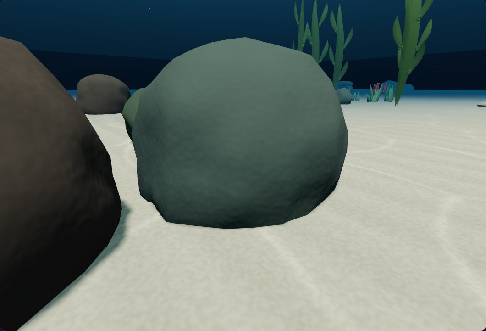
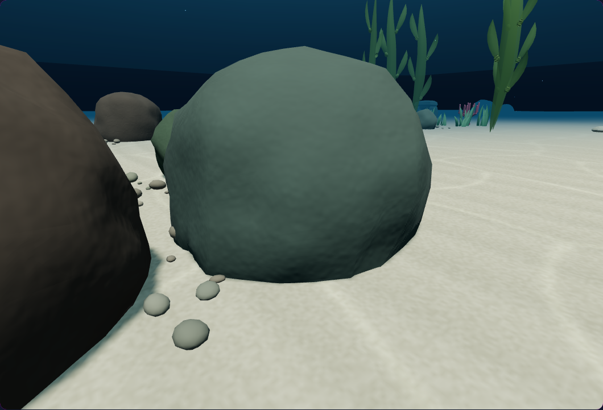
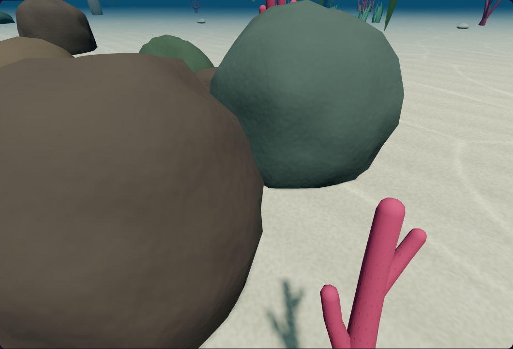
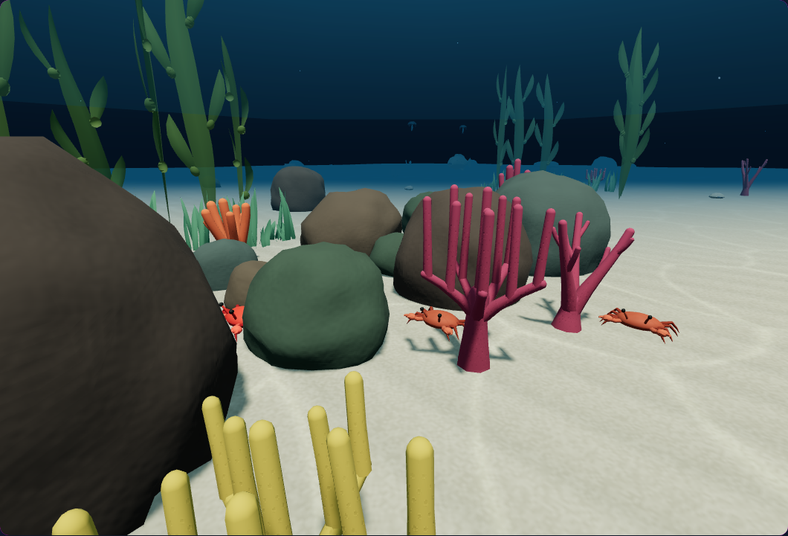
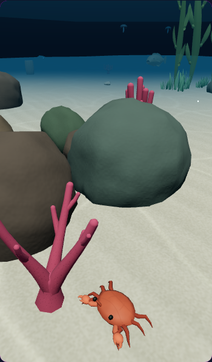

Cephalopod Hunter · environment pass 43
A richer reef floor.
Small mineral fragments now gather around the larger rocks, bringing varied shapes, local colour and a more natural transition into the sand. Their placement follows the seabed as you explore.
Irregular stone clustersGrounded on the seabedScales with visual quality
Where rock meets sand
Matched scene & camera

AfterBeforeMineral fragments follow the large rock’s colour and break up its hard edge against the seabed.
Varied shapes and spacing
Matched scene & camera
AfterBeforeFlattened fragments gather in irregular pockets. Each rests on the terrain, with shadows on balanced and high quality.
Detail within the living reef
Matched scene & camera
 AfterBefore
AfterBeforeThe same full environment surrounds the new rubble, including coral, kelp and moving animals. These comparison frames are paused.
A lighter layout for phones
Matched scene & camera
AfterBeforeLow quality keeps a smaller subset of the same stone layout and omits its shadow casts.
Verified: 73 targeted checks and 6 browser scenarios pass, including movement, paused inspection, endless-world recycling, navigation and target presentation. All four runtime copies match.